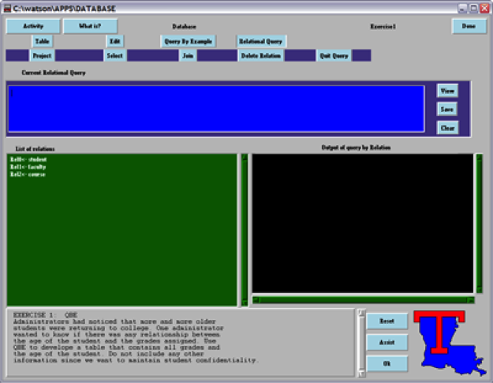
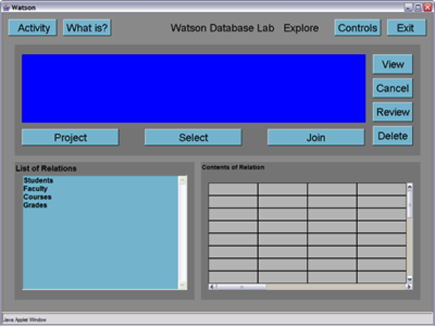
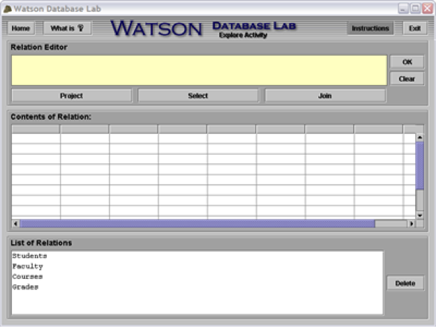
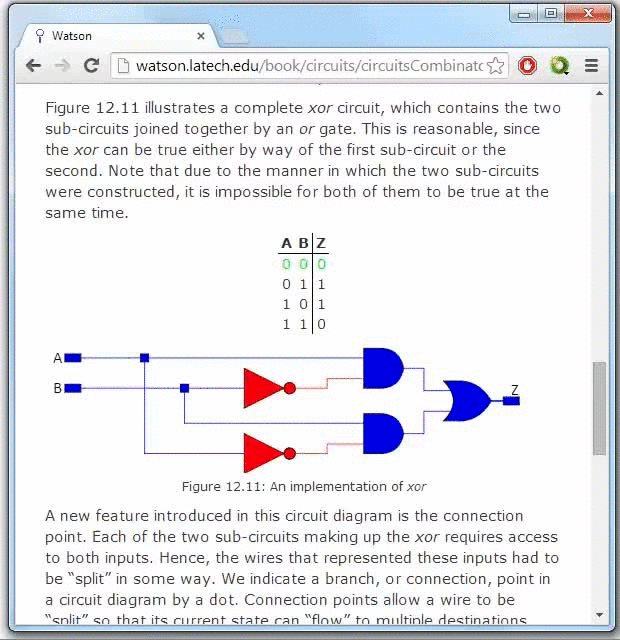

Watson development has taken place in four distinct phases: the first from 1993 through 1995, the second from 1996 to 1998, the third phase from 2002 to 2004, and the fourth phase from 2013 – 2014. Phase 1 (1993 – 1995) The first phase of Watson involved the conceptualization, design, and initial implementation of nine lab environments. During this time, Watson was support by a $100K grant from the National Science Foundation.
Watson’s core concepts of a unified graphical user interface, cross platform compatibility, breadth of concept coverage through the use of a suite of independent labs, and depth of coverage within individual labs by careful attention to the pedagogical content of individual lab activities, were established early on. The original suite of labs included: a simple spreadsheet, a relational database, a data structures lab, a graphics-based programming environment, an imperative programming environment, a functional programming environment, a Finite State Automata lab, an assembly language and machine architecture lab, and a digital logic lab. These labs were implemented in C and used the SUIT (Simple User Interface Toolkit) libraries for cross platform compatibility.
While these prototypes established the viability of the Watson approach to introductory computer science education, they were not robust enough to be used outside of a closed laboratory environment with extensive student assistance provided by instructors and lab monitors. In fact, the Project Director’s candid assessment of the original implementation of Watson would be “buggy as hell”. This should not be surprising, given the goals of the project, its groundbreaking nature, and limited funding. Additionally the interface provided by the labs were not very attractive, nor intuitive.
By the mid-1990’s it became apparent that Watson needed a total rewrite in order to become a viable teaching tool. After several years of continuous classroom use, resulting in feedback from hundreds of students, the Project Director had a very clear idea of what worked and what didn’t. Furthermore, the emergence of Java and explosion of web technologies offered the hope of a stable cross-platform environment for Watson.
Given that NSF funding had expired at this point, the Project Director, set about the bold task of designing and implementing Watson in Java. Since very few Java-based tools or libraries existed at the time (combined with the fact that Java itself was rapidly evolving), the Project Director began by building up a “Watson Java Toolkit” of common components, such as choice selectors, numeric entry pads, and even low-level primitives such as “Watson Buttons”. Once these were in place he redesigned the graphics lab based on student feedback from the Phase I version. He then coded the lab and thoroughly debugged it. The graphics lab thus served as a “template” for all Watson Phase II labs.
Given this template students were offered independent study classes in which they would “re-implement” a Phase I lab using the toolkit and graphics lab as a guide. Some of the labs such as spreadsheet, database, assembly, and digital logic incorporated few pedagogical changes in their port to Java. Other labs, such as data structures, graphics, and imperative programming were completely rethought. Still other labs, such as the functional programming lab and finite state automata lab, were abandoned.
The result of Phase II was a collection of stable, albeit somewhat plain-looking labs, that could be accessed via web browsers. These labs were used successfully in Louisiana Tech’s CSC 100 courses for a number of years. By 1998, the project had reached the point where national dissemination appeared imminent. In addition to Watson, its companion textbook (drafts of which have been student tested since the mid-1990’s) was nearing completion. Despite Watson’s promise, the Project Director had to reluctantly shelve Watson for several years. The continued lack of external funding for Watson, combined with allure of the dot com boom, enticed the Project Director into a two-year sabbatical in industry where I became the Chief Technology Officer for OneNetNow.com. After OneNetNow was sold to Earthlink in 2001, the Project Director elected to return to academia rather than accept a permanent position with EarthLink.
Upon return to academia in the Fall of 2001, four things became apparent (1) Since the labs had been written in the very early days of Java, they were no longer stable on modern Java environments, (2) The look of the labs had become outdated since they were not built with Swing components, (3) The pedagogical content embodied in the Imperative lab was no longer as appropriate as it had been in the mid-1990’s, and (4) The fact that Watson contained zero coverage of object-oriented programming concepts had become a serious omission.
Additionally, the uncompleted textbook could not simply be finished, as sections of it needed to be rewritten to reflect the changes in the field from the mid-late 1990’s to the early 2000’s. Furthermore, since the textbook and the labs are interrelated, any changes to the labs required similar changes to the text. The Project Director began restarting Watson development in 2002. He recruited a graduate student, Cliff Lemoine, to help maintain the Phase II labs and to design and develop an object-oriented programming lab. In the Summer of 2002, he made some inroads into updating the textbook. During the Spring of 2003, he applied to the National Science foundation for funding to fully launch Phase III. Though the proposal reviews were generally strong, the NSF ultimately declined the application. (Oh well… Watson is not so easily killed.)
So, in the tradition of Watson, the Project Director embarked on Phase III. He recruited a bright team of undergraduates and with nothing but Independent Study credit in his pocket and pushed forward with Phase III. The Phase III team was able to build on a Swing-based Watson platform implemented in 1999 by a former graduate student, Don Garrett, together with a nearly complete implementation of the graphics lab Don wrote. The Phase III team made rapid progress re-implementing several of the labs. From December 2003 through February 2004, database, assembly, and digital logic were ported. Data structures, and JavaScript were begun. From March 2004 to May 2004, the spreadsheet lab was successfully ported. During this time, the data structures rewrite was completed, and the initial implementation of the object-oriented lab was finished. As of May 2004 the only lab that is incomplete is the JavaScript lab. Unfortunately, from a pedagogical standpoint, this is one of the most important Watson labs.
During the spring of 2004, the Project Director had the good fortune of teaching CSC 404 “Senior Capstone”. In the spirit of “use every resource at your disposal”, the Project Director selected Watson as the topic for Senior Capstone. In addition to providing desperately needed manpower for the Watson project, this choice enabled the class to gain near-real-world experience with a large project on the back end of the software design process. The CSC 404 class devoted tremendous effort to testing, documentation, and code maintenance. They tested the Phase III software with actual students and incorporated UI changes based on the student’s feedback. Furthermore the class refined the graphical “look” of the labs and incorporated this look into the web and printed documentation they developed.
As of May 2004, the Project Director was once again in the process of applying to the National Science Foundation for funds. These funds are needed to complete development of the JavaScript lab, provide critically needed support for ongoing software maintenance, and to help finish the companion textbook.
With funding declined from the National Science Foundation in 2004, no additional progress was made on Watson for 10 years. It had always been the Project Director’s vision to have the textbook and Watson Labs be combined into one entity. The invention of the tablet and smartphone made electronic books (e-books) more accessible and popular. Perhaps the textbook and Watson Labs could be integrated into one e-book? In the Fall of 2013, an independent study was taken on by a group of students regarding the future of Watson. Java was beginning to show signs of weakening as new security updates were applied in late 2013. After three months of testing various platforms, it was decided that Watson would be integrated into an e-book using HTML5 and JavaScript. HTML seemed very pleasing as cross-compatibility is only a small issue between PCs, tablets, and smartphones.
It just so happened that the Project Director was to teach Software Engineering and Senior Capstone at Louisiana Tech University back-to-back beginning in 2013, which ultimately meant six months of development toward a newest generation of Watson. With no funding, the tradition yet again continued as the Project Director geared up for Phase 4 of Project Watson.
In Winter 2014, the Project Director recruited his Software Engineering class for Phase 4 under Project Manager Andrew Duryea. Four labs were taken this quarter to be re-implemented in HTML and JavaScript. The labs included the following: Assembly, Digital Logic, Graphics, and JavaScript. Database lab was also included in this list; however, it was already implemented in the independent study to show the feasibility of implementing Watson Labs in HTML and JavaScript. The e-book began to quickly take shape as Microsoft Word documents were converted to HTML along with the implementation of navigation throughout the e-book. The ultimate goal for this quarter was to have each chapter in the e-book be implemented using interactive figures from each lab with mobile devices as the target platform.
In Spring 2014, the Project Director and his students continued Phase 4 as the vast majority of the Software Engineering class were enrolled in the Senior Capstone class. Under Project Manager Neil Vosburg, Watson development continued to progress as most of the interactive figures were completely implemented into the e-book. Spreadsheet lab was picked up during this phase to begin its implementation in HTML and JavaScript. The motive for this quarter was to have each lab’s “sandbox” version implemented into the e-book. The idea was to supply a sandbox version for each lab to answer exercises at the end of each section within the chapters (very similar to Phase 3 labs). The only difference; however, was that exercises could be accessible and solved without leaving the e-book. The idea of being able to save and load data from each exercise was implemented using the HTML data store which turned out to be very successful and useful.
The vision had finally become a reality (although more work had to be done for completion); one could either visit the Watson E-book via the Internet or download a local copy to his/her device. The user could read chapters, interact with figures, and solve exercises all under one package. As of May 2014, the Project Director will soon be reapplying for funding from the National Science Foundation. Perhaps using concrete statistics via Google Analytics will prove that Watson is a widely used and necessary tool to newcomers of Computer Science. The funds will be needed to complete, test, and maintain the implementation of each lab within the Watson E-book.
The number of faculty members and students who have contributed to the Watson Project over the years is truly amazing. Below, I have attempted to provide a comprehensive list – along with contact information where available – of those who have made Watson possible. If any Watson alumni out there are reading this page and notice that I have left someone out, or have outdated contact information, please contact me. The first person I would like to thank is Barry Kurtz. Watson would not exist without him. Barry came up with the original idea for a suite of labs to support a breadth-first introduction to computing – and then proceeded to convince me of both the value and feasibility of this approach. Barry was also the driving force behind convincing the National Science Foundation to initially fund the project. During the first phase of the Watson project, Don Garrett and Alex Ramos were key members of the team. Don and Alex implemented the library of shared code that was central to the original C / SUIT lab prototypes. Other individuals who contributed to the development of this phase of Watson include: Pat Bronson, Lee Falta, Michael Gaudet, Dr. Gary Klein, Josh Kleinpeter, Dr. Barry Kurtz, Jeff Matocha, Unmesh S. Mayekar, Dr. Mike O'Neal, Alex Ramos, Dr. Louis Roemer, Vinay Shivaiah, Sameer Singh, Charlie Stear, and Mark Williamson.
During the second phase of Watson development, Josh Kleinpeter was my "right hand man. He was the first person to assist me with use of the labs in the classroom setting. Plus, he did an excellent job keeping the C / SUIT prototypes running well beyond the point at which they should have been retired.
The developers for the second phase of Watson include:
My “right hand man” for the third phase of Watson has been Cliff Lemoine. Cliff was invaluable in helping me to restart Watson development after a three-year lull resulting from my spending time in industry. Cliff helped tutor students in my CSC 100 classes, maintained the Phase II labs, and developed the object-oriented lab for Phase III.
A special heart felt THANK YOU also goes out to my good friend and former student Don Garrett who, in addition to being a primary developer in Phase I of Watson, returned to Louisiana Tech to pursue a Master’s degree and in the process developed the Java Swing framework for Watson Phase III. Don’s years in industry developing object-oriented Java-based applications provided him with the background to lay a solid foundation for the current set of labs. Without Don’s efforts, Watson Phase III would not exist.
The primary developers for Watson Phase III include:
In addition to these developers, I’d like to thank the entire spring 2004 CSC 404 “Senior Capstone” class. This class did a spectacular job improving the look and feel of the Phase III labs, including developing all of the graphics, the user’s manual, brochure, CD case, flash-based web site, flash tutorials, and multi-platform (Windows, Mac, Linux) Watson CD. Additional efforts included: testing, bug tracking, bug fixes, and numerous improvements to the UI based on feedback collected from actual users. While all of those who worked so hard on this project deserve a BIG thank you, special recognition should be give to Jim Patterson (the Project Director), and Chris Martin and Louis Landry (who were jointly responsible for the “look” of Watson Phase III).
The primary developers for Watson Phase IV include:
In addition to these developers, I’d like to thank everyone in the Fall 2013 independent study, Winter 2014 Software Engineering class, and Spring 2014 Senior Capstone class. These students had a tremendous task of implementing Watson into one fully functional e-book, and they did a fabulous job of doing so. With over 3,500 total developer hours dedicated in this Phase (and still growing), it’s obvious to see the amount of effort these students put forth. With that being said, I am VERY thankful for these students and their work!
In addition to the code written specifically for Watson by our developers, several external libraries were used. These libraries along with their authors (if applicable) are enumerated below:
We would like to thank the developers from each and every one of these libraries!
To each and every one of you, “THANK YOU!”
watson.latech.edu